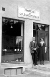

Bernhard Sigfrid Gustafsson Brudell
Guldsmed. Blev 85 år.
| Född: | 1883-01-20 Norrböle, Skellefteå sfs, Skellefteå stad. [1] | |
|---|
| Döpt: | 1883-01-21 Norrböle, Skellefteå sfs, Skellefteå stad. [1] | |
|---|
| Levde: | 1887 Norrböle, Skellefteå sfs, Skellefteå stad. [2] | |
|---|
| Levde: | 1890 Tomt N:o 6, Skellefteå sfs, Skellefteå stad. [3] | |
|---|
| Levde: | 1901 Tomt N:o 6, Skellefteå sfs, Skellefteå stad. [4] | |
|---|
| Värnplikt: | 1905 Skellefteå sfs, Skellefteå sn. [5] | Vpl 49 71/1905. |
|---|
| Inflyttad till: | 1915-02-01 Boden, Överluleå fs, Bodens sn. [6] | |
|---|
| Död: | 1968-03-04 Karlbergsvägen 33 2 Tr, Johanneshov, Gustav Vasa fs, Stockholms stad. [7] | |
|---|
| Vigsel: | 1915-04-16 Kamlunge, Töre fs, Kalix sn. [8] | Bernhard Sigfrid Gustafsson, guldsmed, Öfverluleå fs och Gerda Eriksson, hushållerska. Vigselförrättare: Johannes v. Ahn. (Töre bröts ut ur Nederkalix fs år 1909). |
|---|
| Bosatt: | 1915-12-31 Yttermorjärv, Töre fs, Nederkalix sn. [9] | |
|---|
| Bosatt: | 1917-11-09 Jörn, Jörns fs, Jörns sn. [10] | Infl. överförd från Gb 525/4. |
|---|
| Levde: | 1926 Jörn, Jörns fs, Jörns sn. [11] | |
|---|
| Inflyttad till: | 1930-12-23 Skellefteå stad. [12] | |
|---|
Personhistoria
| Årtal | Ålder | Händelse |
|---|
| 1883 |
|
Födelse 1883-01-20 Norrböle, Skellefteå sfs, Skellefteå stad [1] |
| 1883 |
1 dagar |
Dop 1883-01-21 Norrböle, Skellefteå sfs, Skellefteå stad [1] |
| 1884 |
1 år |
Systern Alida Johanna Gustafsson föds 1884-12-18 Norrböle, Skellefteå sn [13] |
| 1886 |
3 år |
Systern Elna Cornelia Gustafsson föds 1886-11-08 Norrböle, Skellefteå stad [14] |
| 1887 |
|
Levde 1887 Norrböle, Skellefteå sfs, Skellefteå stad [2] |
| 1888 |
5 år |
Systern Nanna Ventea Gustafsson föds 1888-02-13 Skellefteå stad [15] |
| 1890 |
|
Levde 1890 Tomt N:o 6, Skellefteå sfs, Skellefteå stad [3] |
| 1890 |
7 år |
Brodern Alvar Severin Gustafsson föds 1890-03-29 Skellefteå stad [16] |
| 1890 |
7 år |
Makan Gerda Eriksson föds 1890-05-03 Kamlunge, Nederkalix fs, Kalix sn [17] |
| 1893 |
10 år |
Brodern Verner Allan Gustafsson föds 1893-05-17 Skellefteå stad [18] |
| 1894 |
11 år |
Brodern Verner Allan Gustafsson dör 1894-02-17 Skellefteå stad [19] |
| 1899 |
16 år |
Systern Suleima Ingeborg Linnéa Gustafsson föds 1899-07-05 Skellefteå stad [20] |
| 1901 |
|
Levde 1901 Tomt N:o 6, Skellefteå sfs, Skellefteå stad [4] |
| 1905 |
|
Värnplikt 1905 Skellefteå sfs, Skellefteå sn [5] |
| 1912 |
29 år |
Sonen Bert Erik Gerhard Brudell föds 1912-07-17 Boden, Överluleå fs, Bodens sn (BD) [21] |
| 1915 |
32 år |
Inflyttad till 1915-02-01 Boden, Överluleå fs, Bodens sn [6] |
| 1915 |
32 år |
Vigsel Gerda Eriksson 1915-04-16 Kamlunge, Töre fs, Kalix sn [8] |
| 1915 |
32 år |
Dottern Gerda Birgit Signhild Brudell föds 1915-12-16 Kamlunge, Töre fs, Kalix sn [22] |
| 1915 |
32 år |
Bosatt Gerda Eriksson 1915-12-31 Yttermorjärv, Töre fs, Nederkalix sn [9] |
| 1917 |
34 år |
Bosatt Gerda Eriksson 1917-11-09 Jörn, Jörns fs, Jörns sn [10] |
| 1919 |
35 år |
Fadern Petrus (Per) Gustafsson dör 1919-01-03 Skellefteå stad |
| 1919 |
35 år |
Dottern Mabel Bernhild Brudell föds 1919-01-10 Jörns fs, Jörns sn [23] |
| 1926 |
|
Levde Gerda Eriksson 1926 Jörn, Jörns fs, Jörns sn [11] |
| 1930 |
47 år |
Modern Mathilda Kristina Boström dör 1930-09-27 Skellefteå stad [24] |
| 1930 |
47 år |
Inflyttad till Gerda Eriksson 1930-12-23 Skellefteå stad [12] |
| 1938 |
55 år |
Systern Alida Johanna Gustafsson dör 1938-10-17 Kanalgatan 36, Skellefteå stad |
| 1942 |
59 år |
Systern Amelia Selina Gustafsson dör 1942-09-14 Ripan, Umeå sfs, Umeå stad |
| 1942 |
59 år |
Brodern Alvar Severin Gustafsson dör 1942-11-14 Norrbölegatan 34, Skellefteå sfs, Skellefteå stad |
| 1944 |
61 år |
Systern Lovisa Carolina Gustafsson dör 1944-07-18 Södra Järnvägsgatan 11, Skellefteå stad |
| 1957 |
74 år |
Brodern Petrus Hugo Teodor Gustafsson dör 1957-12-25 S. Järnvägsgatan 79, Skellefteå, Skellefteå kfbd, Skellefteå stad [25] |
| 1959 |
76 år |
Systern Elna Cornelia Gustafsson dör 1959-03-28 Norrbölegatan 12, Skellefteå stad |
| 1961 |
78 år |
Dottern Mabel Bernhild Brudell dör 1961-09-28 Bildhuggarvägen 16, Enskede fs, Stockholms stad [26] |
| 1965 |
82 år |
Systern Valborg Matilda Gustafsson dör 1965-05-27 Skellefteå, Sankt Olovs fs, Skellefteå kn [27] |
| 1968 |
85 år |
Död 1968-03-04 Karlbergsvägen 33 2 Tr, Johanneshov, Gustav Vasa fs, Stockholms stad [7] |
Källor
| [1] | Skellefteå sfs C:15 (1880-1891) s.106 r.4 |
| |
| | |
| [2] | Skellefteå sfs AI:13J (1881-1890) s.424 r.27 |
| |
| | |
| [3] | ANNO 1890 |
| |
| | |
| [4] | Skellefteå sfs AI:14E (1891-1899) s.67 r.27, ANNO 1900 |
| |
| | |
| [5] | Skellefteå sfs AIIA:5F (1910-1920) fol. 2262 k.6/9 |
| |
| | |
| [6] | Överluleå AIIA:5F (1910-1920) fol. 2262) k.6/9 |
| |
| | |
| [7] | DOR 68 / PA, DB / DOR 68 / RFV 70 / RFV 70 |
| |
| | |
| [8] | Töre E SCB (1909-1917) 8/1915 22-1 k.1/3 |
| |
| | |
| [9] | Överluleå B:4 (1912-1916) löpnr. 466/1915 s.131 k.3/3, Töre AIIa1c (1909-1920) fol. 915 k.5/6 |
| |
| | |
| [10] | Jörn AIIa:6 (1918-1926) s.85 k.2/8, Töre AIIA:1C (1909-1920) fol. 915 k.5/6 |
| |
| | |
| [11] | Jörn AIIa:6 (1918-1926) s.85 k.2/8 |
| |
| | |
| [12] | Skellefteå Sankt Olov AIIA:2C (1929-1931) fol. 552 |
| |
| | |
| [13] | Skellefteå lfs FD C:15 (1880-1891) s.176 r.12 |
| |
| | |
| [14] | Skellefteå lfs FD C:15 (1880-1891) s.248 r.11 |
| |
| | |
| [15] | Skellefteå lfs FD C:15 (1880-1891) s.297 r.14 |
| |
| | |
| [16] | Skellefteå lfs sfs C:15 (1880-1891) s.378 r.15 |
| |
| | |
| [17] | Nederkalix C:8 1890/150 k.9/12,k AI:11A fol. 136, Mtl Stockholms stad och län 1971 |
| |
| | |
| [18] | Skellefteå lfs FD C:16 (1892-1894) s.102 r.5 |
| |
| | |
| [19] | Skellefteå lfs F:3 (1880-1895) s.241 r.15 |
| |
| | |
| [20] | Skellefteå lfs AI:14E (1891-1899) s.67 r.33 |
| |
| | |
| [21] | Överluleå C:9 (1912-1913) nr 468/1912 k.6/9, SPAR 90, RTB 81 |
| |
| | |
| [22] | Födelsebok (1909-1919) nr.122/1915 s.146 |
| |
| | |
| [23] | Jörn C:6 (1918-1920) nr. 9/1919 s.55 k.2/7 |
| |
| | |
| [24] | NV - Dödsannonsregistrering 1930-09-30 |
| |
| | |
| [25] | DB / DOR 52-60 |
| |
| | |
| [26] | DB, PA / DOR 61 |
| |
| | |
| [27] | DB / DOR 65 / UTD 61-67 |
| |
|
 |
| 1911 |
| |
|
|
| |
 |
| 1915-04-16. Vigsel i Töre kyrka, Nederkalix sn. |
| |
|  |
|
| |
|
|
| |
|
|
|


{kind=link}
{kind=link}
{kind=link}
{kind=link}